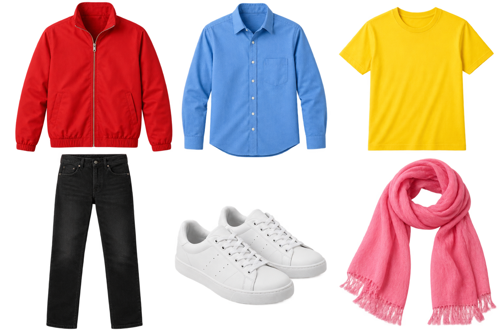

Vocabulary practice · Unit 5
The secret suitcase
Pack, remember, guess5A

1 Secret suitcase
Choose two items. Write their colors and names below.
Show your list for ten seconds, then cover it. Your partner recalls your pair. Uncover and check. One point for each correct item.
Alone? Look for twenty seconds. Cover the picture and name all six items. Uncover and check.
2 Four things are missing. Solve the clues, then choose one extra item for your case.
- You carry your phone in it: b
- One item with a top and a skirt: d
- You wear it on your head: h
- A warm top for a cold day: sw
Which way at the checkout?5B
3 Decision trail. Write pay, try on, keep or return. Use each once.
Put the jacket on in the store.
Use your card.
You like it. It stays with you.
Give it back to the store.